Und was passiert, wenn die Person ausfällt, die das heute im Kopf hat?
Im INQA-Coaching arbeiten wir genau daran: an bis zu zwölf Tagen, 80 % gefördert, gemeinsam mit Ihren Fachangestellten.
Lieber direkt sprechen? +49 221 6505 3000
Ein Angebot des autorisierten INQA-Coaches Dominik Siegers (CogniCore IT Solutions GmbH), nicht die offizielle Website des Förderprogramms.
Der Notar beurkundet, das Büro hält alles andere zusammen. Dort setzt das Coaching an.
Vom Eingang der Anfrage bis zum Beurkundungstermin. Das Team legt fest, welche Angaben je Vorgang nötig sind, wer sie einmal erfasst und wo der Vorgang zwischen Sekretariat, Sachbearbeitung und Notar übergeben wird.
Pflichtangaben je Vorgangsart, ein gemeinsamer Erfassungsweg statt Mehrfacheingabe, feste Übergabepunkte und Regeln für Änderungswünsche.
Hier liegen die meisten Vorgänge, und hier wartet das Büro auf Dritte. Das Team baut eine Statussicht über alle offenen Vorgänge und legt fest, wer wann bei Banken, Gemeinden, Grundbuchamt und Finanzamt nachfasst.
Ein Statusmodell, das alle im Haus sehen, eine feste Nachfassroutine, klare Zuständigkeit je Vorgang und eine Übersicht für die Kanzleileitung.
Wissen aus einzelnen Köpfen in eine gemeinsame Ablage, damit Urlaub, Krankheit und die Einarbeitung neuer Kräfte den Betrieb nicht ausbremsen.
Eine Vertretungsregel je Rolle und beschriebene Standardvorgänge als Grundlage für die Einarbeitung.
Der Notar muss dafür nicht aus seinen Beurkundungen. Gearbeitet wird vor allem mit der Büroleitung und den Fachangestellten, der Notar setzt Ziel und Rahmen.
Vorher steht ein kurzes Gespräch mit mir und die Erstberatung bei einer INQA-Beratungsstelle. Sie entscheidet über die Förderung und stellt den Beratungsscheck aus.
Kick-off, Ist-Aufnahme von Aktenlauf und Vollzug, ein gemeinsames Zielbild.
Lösungen im Büro erarbeiten, im Tagesgeschäft erproben und festschreiben.
Einüben, die Wirkung prüfen und den Abschluss dokumentieren.
Die Förderrichtlinie nennt Angehörige der freien Berufe ausdrücklich, und Notare zählen zu den freien Berufen.
Verbindlich entscheidet die INQA-Beratungsstelle in der Erstberatung, nicht der Coach. Welche Punkte dort geprüft werden, sage ich Ihnen gern vorab.
Ich habe BWL und Wirtschaftspsychologie studiert und begleite seit 2020 als geschäftsführender Gesellschafter der CogniCore kleine und mittlere Unternehmen dabei, ihre Abläufe einfacher und planbarer zu machen.
Im Coaching arbeite ich mit den Leuten, die die Arbeit machen, und bleibe so lange dran, bis das Neue im Alltag hält. Fertige Folien bringe ich keine mit.
Nicht eigens. Es richtet sich an kleine und mittlere Unternehmen, und Notariate sind als Angehörige der freien Berufe ausdrücklich antragsberechtigt.
80 % der förderfähigen Beratungskosten übernimmt das Programm. Bei zwölf Tagen zu je 1.200 € bleiben 2.880 € netto als Eigenanteil.
Bis zu zwölf Beratungstage, verteilt über vier bis sieben Monate. Die Termine planen wir um Ihre Beurkundungen herum.
In der Regel ja. Seit der neuen Förderrichtlinie vom Juni 2026 ist ein Inhaberwechsel unschädlich, solange die Kanzlei als wirtschaftliche Einheit seit mindestens zwei Jahren besteht.
Nein. Im Coaching geht es um die Abläufe in Ihrem Büro. Es darf nicht auf den Verkauf von Waren, Software oder weiteren Beratungen gerichtet sein, das schreibt das Programm so vor.
Mit einem kurzen Gespräch von zwanzig Minuten. Darin klären wir Ihre Themen und den Weg zur Beratungsstelle. Ob Sie das Coaching danach beauftragen, entscheiden Sie in Ruhe.
Ein kurzes Gespräch von zwanzig Minuten, danach wissen Sie, ob und wie es weitergeht.
Gespräch vereinbarenOder rufen Sie an: +49 221 6505 3000